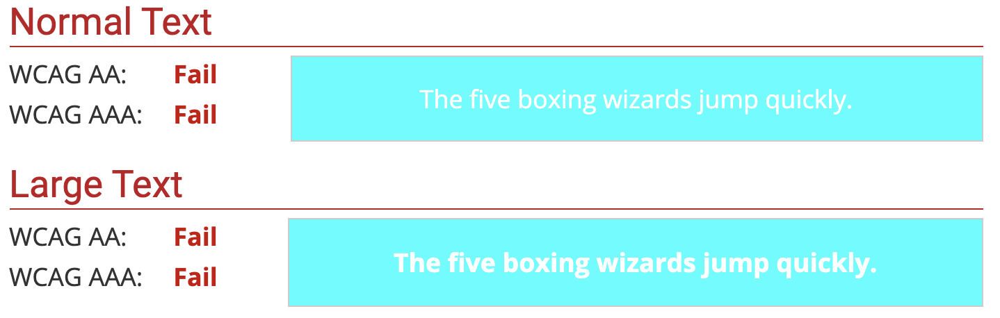

Begin website
Dit is het eerste bericht op de website. Gemaakt in de woonkamer. De taken die voor nu belangrijk zijn, zijn:
- Onderwerpen bedenken
- Kleurenpalet kiezen
- Content maken
Kleurenpalet
Het Voor een kleurenpalet zijn er veel 'regels' waar je rekening mee kunt houden.
- De sfeer van je website
- De toon van je website
- De leesbaarheid
- De hierarchie van je site
Het is aan jezelf om te kiezen welke jij het belangrijkst vindt en welke je niet wilt gebruiken. Dit ligt natuurlijk aan de toon van je site. Wil je bijvoorbeeld een professionele website dan kun je het beste rustige kleuren gebruiken die niet te veel vloeken en een juiste leesbaarheid geven. Ook kun je een speelse toon aangeven door verschillende en niet veelgebruikte kleuren te gebruiken.
Leesbaarheid
Het is meestal belangrijk dat de tekst leesbaarheid is. Je kunt alle kanten op met typografie, zo kun je teskt juist heel groot en scheef maken, of juist normaal, als in dit artikel. De leesbaarheid hangt natuurlijk af van de fontgrootte en type. Maar ook van het contrast.Een witte tekst op een lichtblauwe achtergrond is behoorlijk
onleesbaar.
Hier zie je de resultaten als je de kleurencombinatie uittest op de legibility checker. Alle tools kun je ook vinden bij Ideeen>Tools
